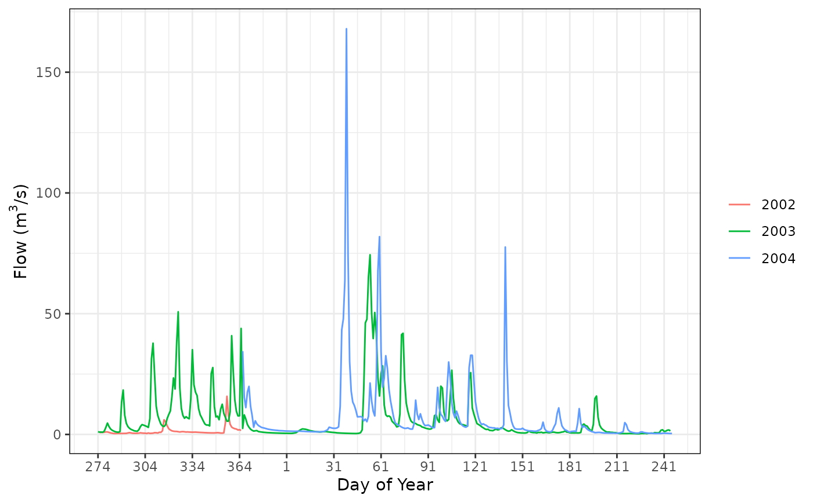
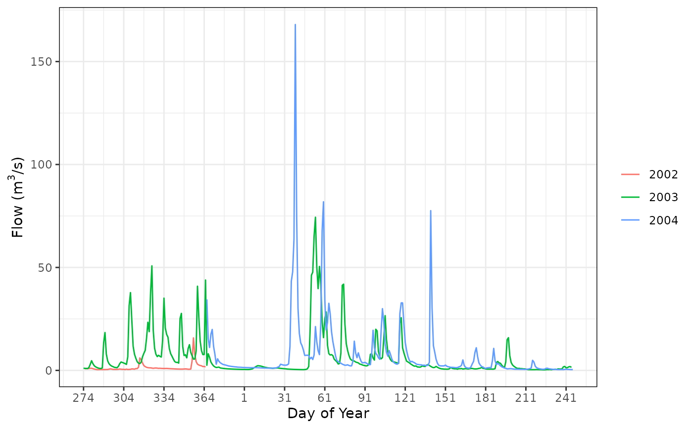

rvn_flow_spaghetti creates a spaghetti plot of the flow series provided.
rvn_flow_spaghetti(flow)Arguments
- flow
time series object of simulated flows
Value
- TRUE
return
TRUEif the function is executed properly
Details
Creates a spaghetti plot of the annual flow series in each year of data provided. The flows are plotted for each water year of data available, set as October 1st.
Note that the plotting to the day of year is approximate in order to simplify the plotting of leap years and non-leap years. The years are plotted including day 366 and starting on day 274, regardless of whether it is a leap year or not. This is likely without consequence in seeing the trends between water years, however the user is warned of this deficiency.
The flow series provided should be of time series (xts) format.
Note that a plot title is purposely omitted in order to allow the automatic generation of plot titles.
See also
rvn_flow_scatterplot to create a scatterplot of flow
values
Examples
# load sample hydrograph data, two years worth of sim/obs
data(rvn_hydrograph_data)
# create spaghetti plot of simulated flows
rvn_flow_spaghetti(rvn_hydrograph_data$hyd$Sub36)
 # create spaghetti plot of observed flows
rvn_flow_spaghetti(rvn_hydrograph_data$hyd$Sub36_obs)
#> Warning: Removed 1 row containing missing values or values outside the scale range
#> (`geom_line()`).

# create spaghetti plot of observed flows
rvn_flow_spaghetti(rvn_hydrograph_data$hyd$Sub36_obs)
#> Warning: Removed 1 row containing missing values or values outside the scale range
#> (`geom_line()`).
